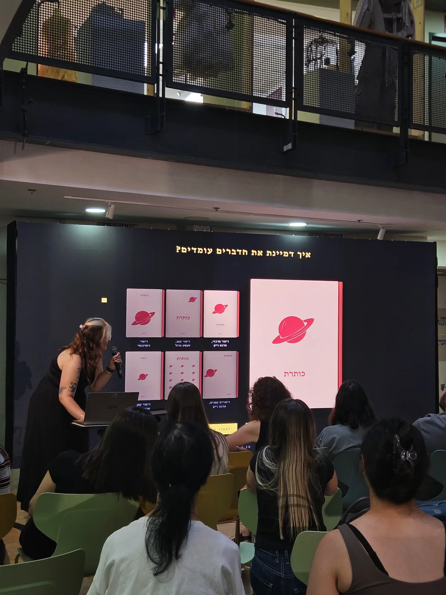
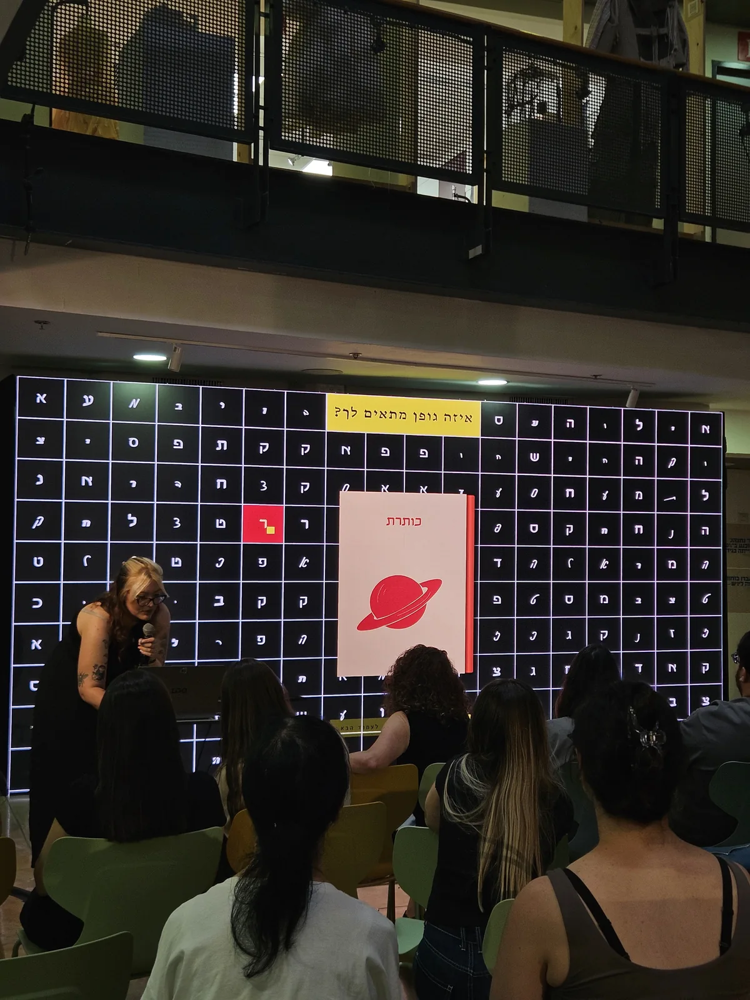

לפי הכריכה
ממשק אינטראקטיבי שמעצב כריכה אישית לכל משתתף ומשתתפת
נקודת המוצא
עבודה זו מתנגדת לאמירה הידועה: "אל תשפוט ספר לפי הכריכה שלו", זאת מכיוון שהאופן בו אנו שופטים לפי הכריכה משפיע על עולם התוכן שנצרוך ונקרא. הממשק מזמין אותנו לגלות שהכריכה לא מספרת לנו רק על תוכן הספר, אלא גם על מי שאנחנו.
הרעיון
מתוך מחקר על שפת הכריכות בחמישה ז'אנרים (פנטזיה, מתח ואימה, מדע בדיוני, ספרות יפה ורומנטיקה), בניתי בנק של עשרות דימויים מאוירים. כל דימוי נושא משמעות מוכרת מעולם עיצוב הספרים: העורב באימה, החללית במדע הבדיוני, המעטפה ברומנטיקה. המשתתפים עוברים שאלון שבו הם בוחרים ז'אנר, דימוי, צבעוניות, קומפוזיציה וגופן, וכך מעצבים בעצמם את הכריכה שלהם, שלב אחר שלב. בסוף התהליך הכריכה יוצאת ממדפסת, ועל גבה תקציר שהוא בעצם ניתוח אישיות שנגזר מהבחירות שלהם.
תוצרים
- מחקר שפת כריכות לפי ז'אנר
- בנק דימויים מאויר
- עיצוב ופיתוח הממשק
- לוגו ושפה חזותית
- כריכות מודפסות אישיות
- סרטוני תדמית
- הצבה בתערוכת הגמר

בנק הדימויים: 12 עד 16 דימויים מאוירים כקבצי SVG
(ממתין לקבצים)
(ממתין לקבצים)


